➤ Bryan Guner
➤ Introduction to Practical Music Theory
(If you don't understand something just keep reading and write down your questions)
(Don't worry about memorizing anything; try to understand the concepts instead… Use google or YouTube to solidify concepts)


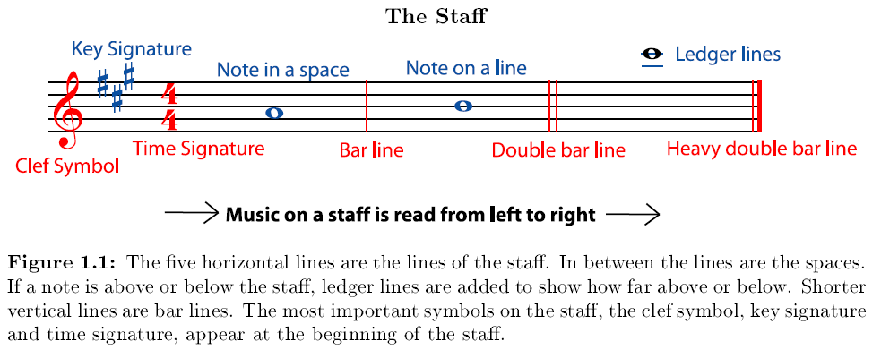
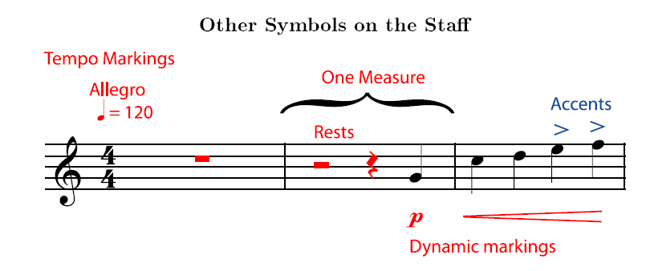
For simplicity sake we will assume dynamics refers only to volume so the dynamic marking above (called a crescendo) would indicate to play louder in the last 'bar' or 'measure'.
Time Signatures : For extra explanation watch: (https://www.youtube.com/watch?v=TkMwNOpl2P4)
Not to be confused with 'tempo' which is the same thing as 'beats per minute'
The two numbers in the time signature tell you how many beats are in each measure of music and the length of the note that gets the beat.
- A piece with a time signature of 4/4 has four quarter note beats (most common time signature by a landslide).
- each measure with a 3/4 meter has three quarter note beats.
- each measure of 2/4 time has two quarter note beats.
A time signature of 4/4 meter does not mean that each measure has only four quarter notes. It means each measure has only four beats. These beats may contain half notes, quarter notes, eighth notes, rests, whatever the composer wants, but all notes and rest values in a measure must add up to equal exactly the top number (or numerator) of the time signature in terms of beats (2 whole notes would not fit within a 4/4 bar) ( see examples at bottom ).
Figure 1: Note Lengths 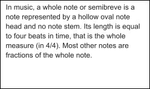
 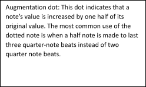
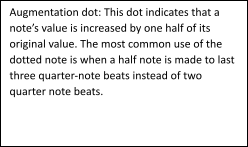 


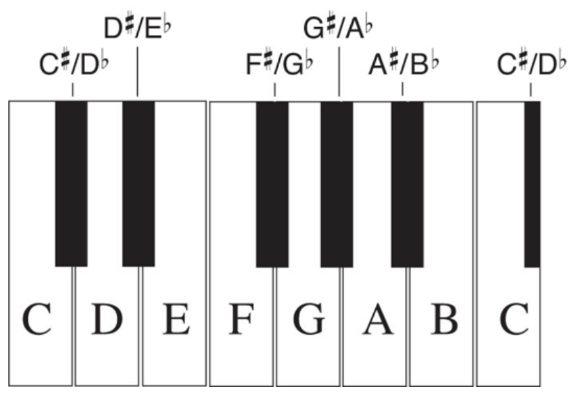
➤ Pitch:
- The pitch of a note is how high or low it sounds. Pitch depends on the frequency (measured in Hertz 'Hz') of the fundamental sound wave of the note.
- The higher the frequency of a sound wave, and the shorter its wavelength (wavelength= speed of sound/frequency of sound), the higher its pitch sounds. (not important; still worth knowing)
- In music we give certain frequencies note names: A, B, C, D, E, F, and G. These notes are all the white(naturals) keys in 1 octave (in the figure above 1 octave from the lower C to the higher C), going up to the next octave of a note means the higher pitch is double the frequency of the lower pitch. ( An interval is the difference in the frequency of two notes)
- There are 12 notes in an octave (not counting the octave note itself), the smallest interval between two notes on most instruments is called a Half Step , this is the distance between any white key and it's immediate neighboring black keys; the difference between most white keys is a whole step(with the exception of B<---> C & E<--->F which are also separated by only a half-step). 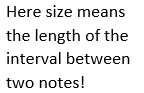
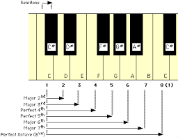 

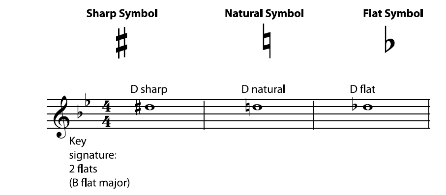
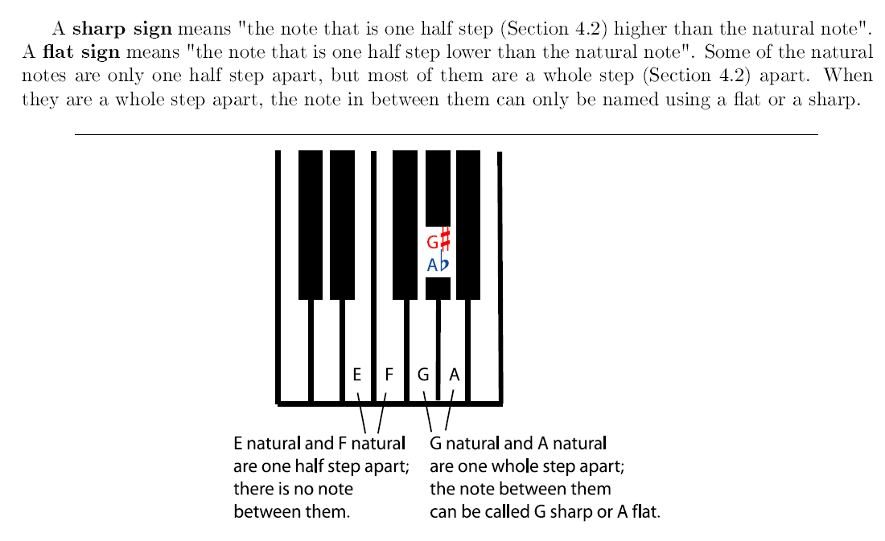 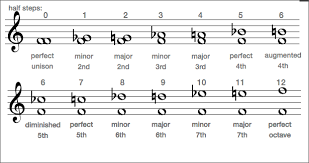
Notice that, using flats and sharps, any pitch can be given more than one note name. For
example, the G sharp and the A flat at are played on the same key on the keyboard; they sound the
same. You can also name and write the F natural as "E sharp"; F natural is the note that is a half
step higher than E natural, which is the definition of E sharp.
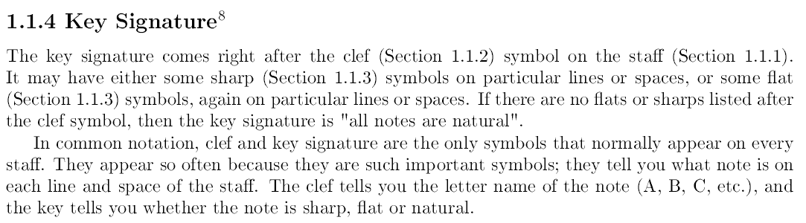 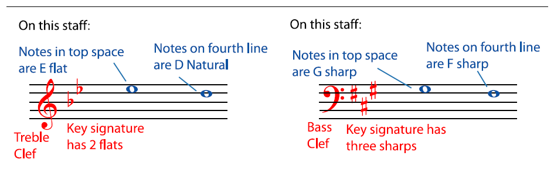 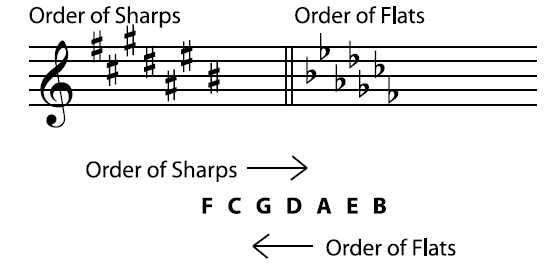 
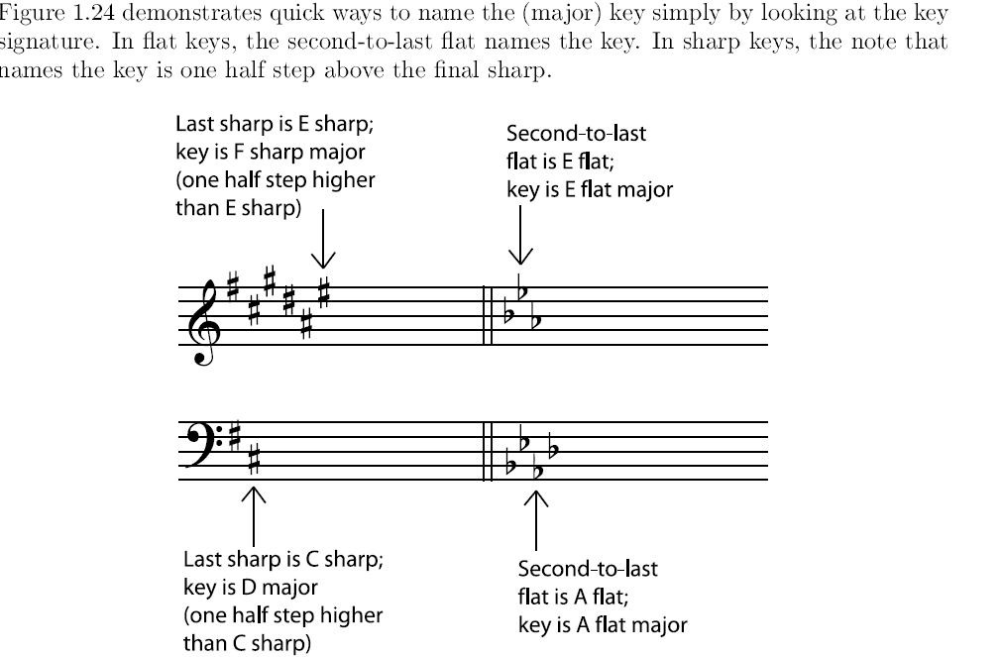
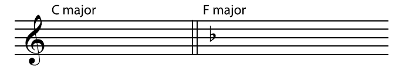 
( The paragraph below explains the trick detailed in the figure above) 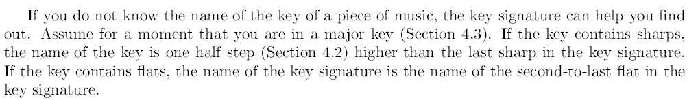 
 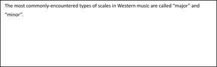
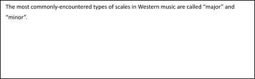  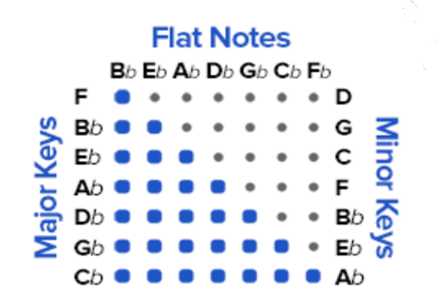 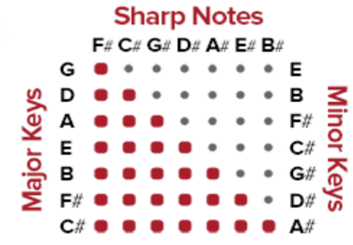
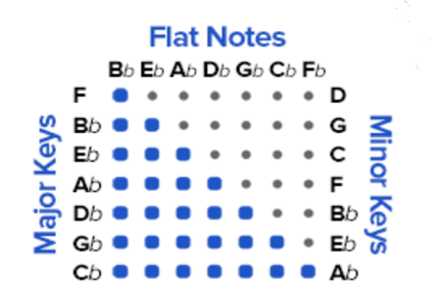 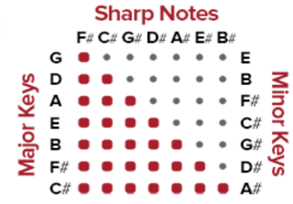 
 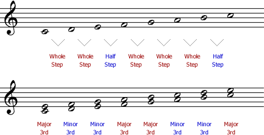
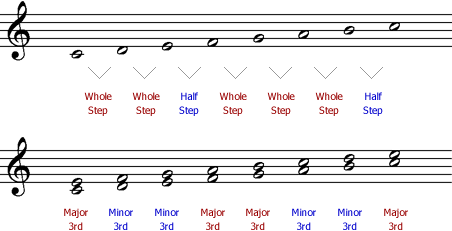
Try it:
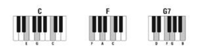 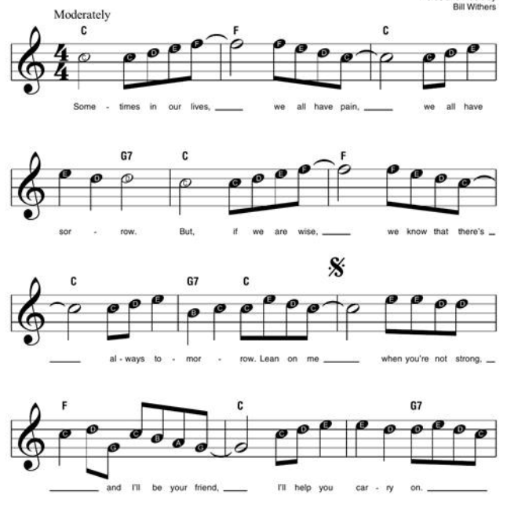
https://www.youtube.com/watch?v=BcqKdJitv_8&feature=youtu.be
If you want to learn the rest of the song check out this YouTube tutorial; for now reading in both staves (both left and right hand) will be to advanced, especially reading/playing both parts simultaneously.
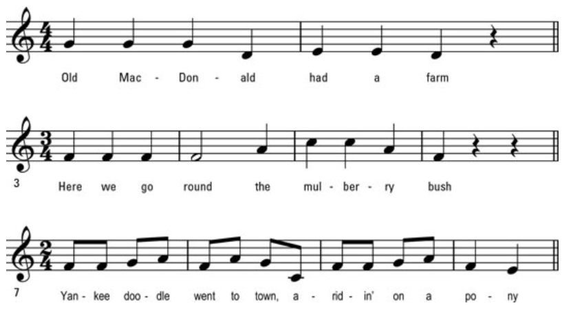
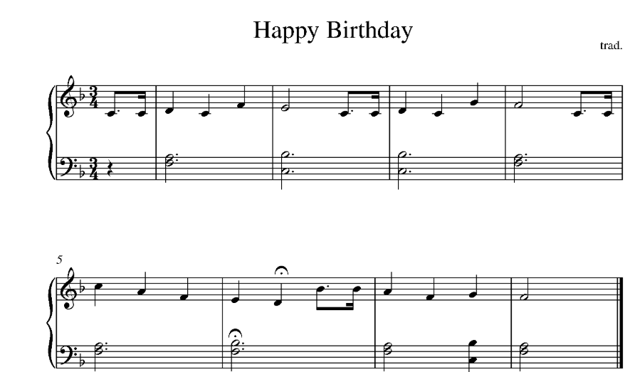
Exercises: (HOMEWORK)
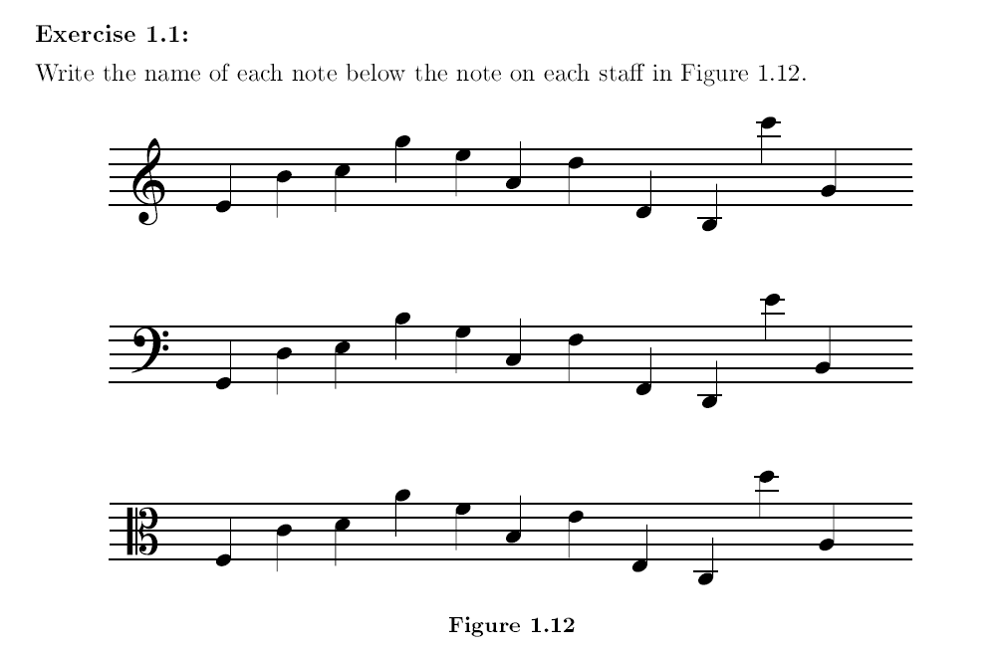
For figure 1.26; use the circle of fifths to name the relative minor keys that correspond to the below major key signatures. 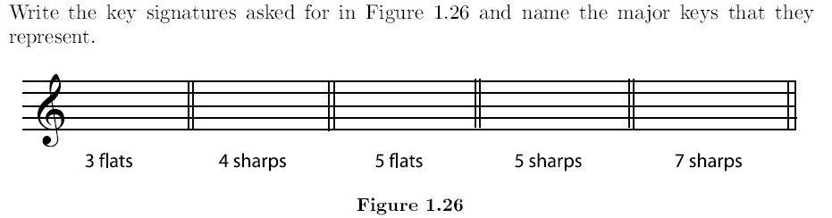